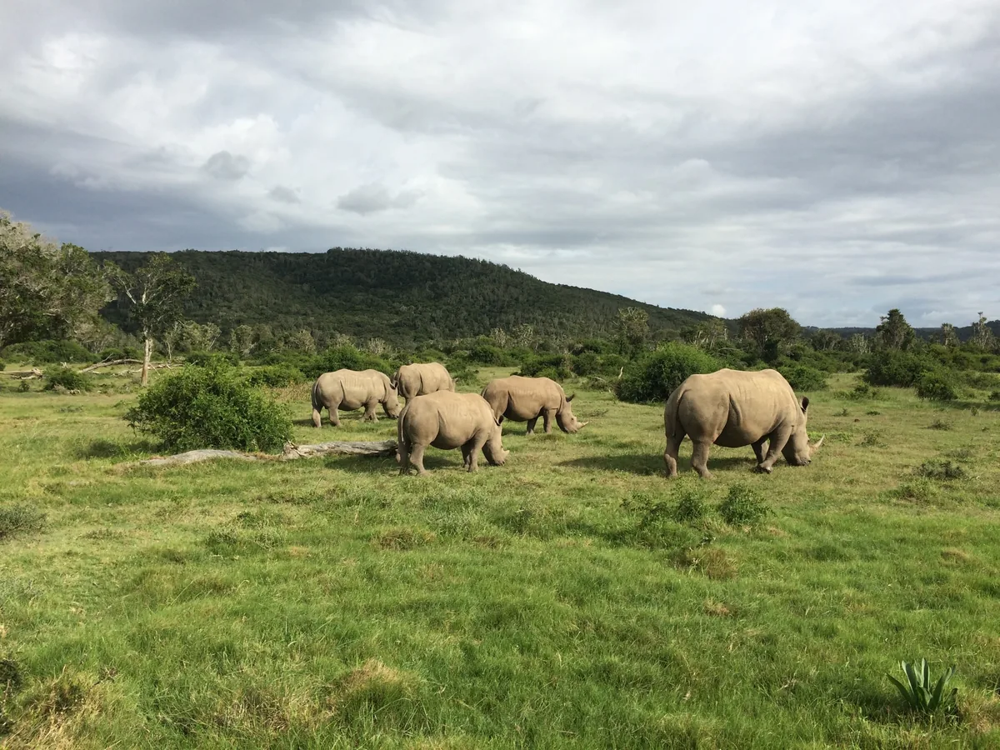
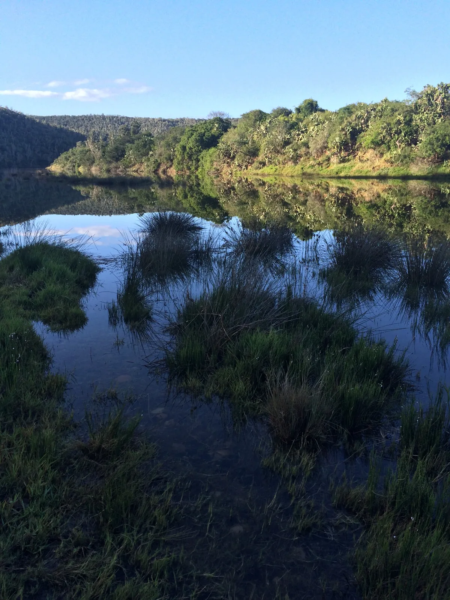
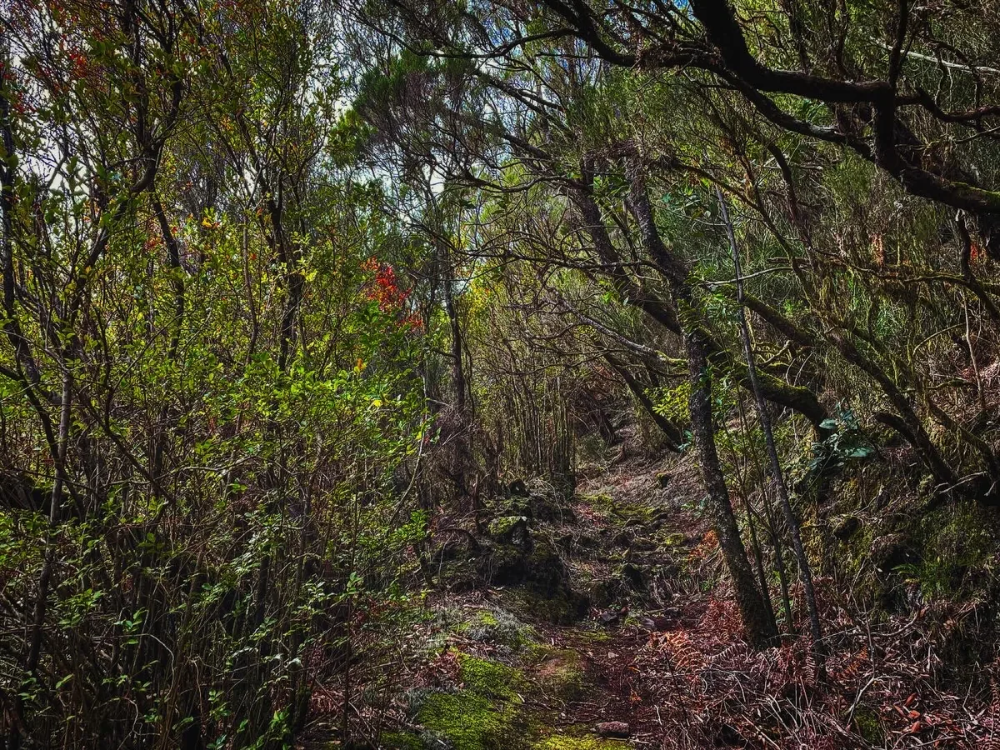

Research-agenda manuscript
A methodological agenda paper with a workshop-generated implementation pathway.
8–10 December 2026 · Mount Rigi, Switzerland
A joint initiative to advance mechanistic predictions of ecosystem service stability.
Why this workshop
Biodiversity projections increasingly describe expected changes in species occurrence, abundance and community composition. These projections are essential, but they do not by themselves show whether ecosystem functions and services will persist under multifarious environmental change. The workshop asks how forecasting can connect biodiversity change to stability-relevant mechanisms and outcomes.
Response diversity—the variation in environmental responses among species, populations or functional groups that contribute to similar ecosystem functions—is a promising mechanism-oriented predictor. It is not itself a stability metric, and its ability to predict observed stability needs explicit empirical validation.
Our longer-term vision is to develop and validate spatially explicit, response-diversity-based predictions of ecosystem-function stability, supported by an online explorer that makes methods, assumptions, uncertainty and evidence transparent.



Workshop focus
A methodological agenda paper with a workshop-generated implementation pathway.
A shared scientific basis for a validation platform that can later support an interactive explorer.
Project ideas, cross-system syntheses and potential data contributions emerging from the workshop.